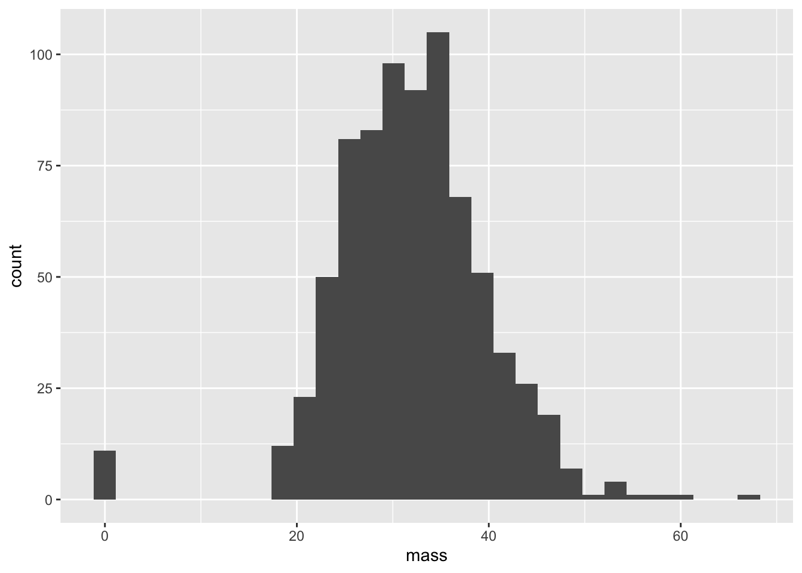

Data science reminds us that life is imperfect. Errors abound. There is error of measurement in a dataset, error in data entry, error in processing data to a workable file, error from the data scientist analyzing the dataset (the course of this class is to reduce this type of error as much as possible), and finally, error in the interpretation of the data analysis from the audience. Carrying a healthy skepticism when dealing with data is always a good idea, and the more you work with data, the more you see the imperfections that seem to invade from every direction. Of course, some errors are completely harmless. Having Heght instead of Height for the name of a variable is certainly a mistake, but the audience knows what you mean. Corrupting the value of an entry, however, is a much worse offense. For a variety of reasons, a data collector could put down something wrong. Some examples of why a bad data entry occurs include “fat fingering” (just typing in the wrong number), using incorrect units, and lack of interest. To address the last point, imagine being a nurse in 1995 who is told to record height and weight for “the database”. You don’t know what a database is, and you have sick patients to tend to. With that in mind, should we be surprised to find medical datasets with patients having a height of Thursday?
Q: Can you think of at least three other reasons why a datapoint may be corrupted?
In science, if you are uncertain of something, it’s best to make that fact very clear. Granted, this is easier said than done. Every human wants to be recognized as being knowledgeable. The pressure for a scientist is even greater. Corrupted datasets could mean a ruined study, which could translate to a lost grant or worse. The temptation to fudge data could be very great, and there are many examples of prestigious labs caught red-handed. While we won’t get too into the weeds with ethics, it’s very easy to say the following: when it comes to incorporating false data without making it crystal clear to your audience,
Alright, alright, enough with the lecturing, let’s get to business. We’ll be working with the ggplot2 and dplyr packages again, so make sure that they are loaded before starting this section.
We’re also working again with the PimaIndiansDiabetes dataset. This time, we are interested in the dataset’s flaws. From previous labs, we learned that this dataset has been registering people with a BMI of zero.
ggplot(PimaIndiansDiabetes,aes(x = mass)) + geom_histogram()## `stat_bin()` using `bins = 30`. Pick better value with `binwidth`.
It is clear that we don’t know the actual BMI of our entries with values of 0. Let’s write a function that converts 0’s (and in general, nonpositive values) to NA. The value NA in a dataset is essentially a placeholder for “I don’t know”. Of course, in real life, “I don’t know” could mean many things: e.g. “I didn’t record the value”, “I recorded the value, but it doesn’t make sense”, “The value is censored by a company, government, etc.”, “I’d just flat out rather not tell you because it would make my dataset look bad for whatever reason”, and so on.
pos = function(x){
if(x > 0){
return(x)
} else{
return(NA)
}
}NA’s are like Christmas lights: if one goes out, the whole thing goes out. In other words, if I have an unknown number, I certainly won’t know what it is when it’s divided by two! Here are some examples of NA’s performing under popular functions:
NA + 7## [1] NANA*NA## [1] NANA^0## [1] 1NA <= Inf## [1] NANA*0## [1] NAmean(c(5,4,NA))## [1] NAmax(c(5,4,NA))## [1] NAQ: The fourth and fifth examples have answers which have generated some controversy. Why is that?
If we want to compute things like the mean or the max of a vector restricted to non-NA entries, we need to use na.rm as an additional argument
mean(c(5,4,NA), na.rm = TRUE)## [1] 4.5max(c(5,4,NA), na.rm = TRUE)## [1] 5Using our function pos, let’s apply it to every element in the mass variable
newpima = PimaIndiansDiabetes %>% mutate(posmass = pos(mass))## Warning: Problem with `mutate()` input `posmass`.
## ℹ the condition has length > 1 and only the first element will be used
## ℹ Input `posmass` is `pos(mass)`.## Warning in if (x > 0) {: the condition has length > 1 and only the first element
## will be usedWe’ve been given a warning: our function has only been applied to the first element! The reason why this is the case is because our function pos isn’t vectorized, meaning that you can only insert one element into pos at a time. There are a few ways around this
vecpos = function(x){
return( sapply(x,pos))
}
vec2pos = Vectorize(pos)
vecpos( c(-1, 3, 0))## [1] NA 3 NAvec2pos( c(-1, 3, 0))## [1] NA 3 NALet’s try again
newpima = PimaIndiansDiabetes %>% mutate(posmass = vecpos(mass))Success! Let’s extend our analysis to the entire dataset. If we look at the variables in PimaIndiansDiabetes, we note that besides pregnant and diabetes, every variable should be positive. Just how corrupted is our dataset? There are many ways to specifically ask this question, but here are two extremes:
We’ll need some vector logic to answer these questions.
ind1 = which(PimaIndiansDiabetes$pregnant == 0 |
PimaIndiansDiabetes$mass == 0 |
PimaIndiansDiabetes$insulin == 0 | PimaIndiansDiabetes$glucose ==0|
PimaIndiansDiabetes$pressure ==0|
PimaIndiansDiabetes$triceps == 0 )
length(ind1)/dim(PimaIndiansDiabetes)[1]## [1] 0.5625ind2 = which(PimaIndiansDiabetes$pregnant == 0 & PimaIndiansDiabetes$mass == 0 &
PimaIndiansDiabetes$insulin == 0 &
PimaIndiansDiabetes$glucose == 0 & PimaIndiansDiabetes$pressure ==0 & PimaIndiansDiabetes$triceps == 0 )
length(ind2)/dim(PimaIndiansDiabetes)[1]## [1] 0Observe the types of operators that we are using. The vertical bars || means ‘or’, and ampersands && means ‘and’. For vector quantities, we use single | and &. Here’s a quick review of logic tables, which give values when considering binary logical operators, and an example of what happens when using vector booleans.
0 || 1## [1] TRUE1 || 0## [1] TRUE1 || 1## [1] TRUE0 || 0## [1] FALSE0 && 1## [1] FALSE1 && 0## [1] FALSE1 && 1## [1] TRUE0 && 0## [1] FALSEc(0,1) & c(1,1)## [1] FALSE TRUEc(0,1) | c(1,1)## [1] TRUE TRUEAlso observe that there’s a pretty stark difference between using ‘and’ versus ‘or’! Most patients have a corrupted entry, but there’s not a single patient that has corrupted data for every variable. If you were running a study or trying to build a model, it would be pretty expensive to throw away half of your dataset. On the other hand, it would be a very, very bad idea just to plug in entries that seem correct and then not say anything about it. A happy medium is data imputation, in which we try to estimate what type of entry should be included, and then make sure that you make this point crystal clear when explaining your model. We will look at data imputation methods more closely in future labs.
Let’s take a look at the iris dataset, a built-in dataset in R commonly used as an example in clustering algorithms. Near the end of this course, we will revisit iris when we look at methods in machine learning. This is also an opportunity to get some practice with the pipe operator.
Here’s a peek of iris
head(iris)## Sepal.Length Sepal.Width Petal.Length Petal.Width Species
## 1 5.1 3.5 1.4 0.2 setosa
## 2 4.9 3.0 1.4 0.2 setosa
## 3 4.7 3.2 1.3 0.2 setosa
## 4 4.6 3.1 1.5 0.2 setosa
## 5 5.0 3.6 1.4 0.2 setosa
## 6 5.4 3.9 1.7 0.4 setosaThis contains five variables: the length and width for sepal and petal lengths, and the a species classification. The major question asked for classification algorithms is this: give the first four columns of petal and sepal information, can we predict the species?
Let’s use the filter function to create a subset of the iris dataset which only shows the setosa species of iris.
head(iris %>% filter(Species == 'versicolor'))## Sepal.Length Sepal.Width Petal.Length Petal.Width Species
## 1 7.0 3.2 4.7 1.4 versicolor
## 2 6.4 3.2 4.5 1.5 versicolor
## 3 6.9 3.1 4.9 1.5 versicolor
## 4 5.5 2.3 4.0 1.3 versicolor
## 5 6.5 2.8 4.6 1.5 versicolor
## 6 5.7 2.8 4.5 1.3 versicolorNotice that the operations that we perform these operations with dplyr do not change the original dataset. Indeed, if we type in iris again, we get
head(iris)## Sepal.Length Sepal.Width Petal.Length Petal.Width Species
## 1 5.1 3.5 1.4 0.2 setosa
## 2 4.9 3.0 1.4 0.2 setosa
## 3 4.7 3.2 1.3 0.2 setosa
## 4 4.6 3.1 1.5 0.2 setosa
## 5 5.0 3.6 1.4 0.2 setosa
## 6 5.4 3.9 1.7 0.4 setosaWe can demand two or more qualifications of the dataset as well. For instance, let’s demand that we have versicolors with sepal widths between 3.0 and 3.5 cm.
head(iris %>% filter(Species == 'versicolor' & Sepal.Width >= 3 & Sepal.Width <= 3.5))## Sepal.Length Sepal.Width Petal.Length Petal.Width Species
## 1 7.0 3.2 4.7 1.4 versicolor
## 2 6.4 3.2 4.5 1.5 versicolor
## 3 6.9 3.1 4.9 1.5 versicolor
## 4 6.3 3.3 4.7 1.6 versicolor
## 5 5.9 3.0 4.2 1.5 versicolor
## 6 6.7 3.1 4.4 1.4 versicolorQ: What would happen if we used double ampersands?
The arrange function is used to sort a dataset with respect to a variable. Let’s first arrange by species.
Q: Use the function to sort the dataset by species. How is this set arranged? How can we arrange this in the opposite order?
iris %>% arrange(Species ) %>% head## Sepal.Length Sepal.Width Petal.Length Petal.Width Species
## 1 5.1 3.5 1.4 0.2 setosa
## 2 4.9 3.0 1.4 0.2 setosa
## 3 4.7 3.2 1.3 0.2 setosa
## 4 4.6 3.1 1.5 0.2 setosa
## 5 5.0 3.6 1.4 0.2 setosa
## 6 5.4 3.9 1.7 0.4 setosaQ: How is this being sorted?
We can also arrange by species and then something else, say petal width
iris %>%
arrange(Species, Petal.Width) %>% head## Sepal.Length Sepal.Width Petal.Length Petal.Width Species
## 1 4.9 3.1 1.5 0.1 setosa
## 2 4.8 3.0 1.4 0.1 setosa
## 3 4.3 3.0 1.1 0.1 setosa
## 4 5.2 4.1 1.5 0.1 setosa
## 5 4.9 3.6 1.4 0.1 setosa
## 6 5.1 3.5 1.4 0.2 setosaFinally, to arrange in descending order
iris %>%
arrange(desc(Species),Petal.Width) %>%
head## Sepal.Length Sepal.Width Petal.Length Petal.Width Species
## 1 6.1 2.6 5.6 1.4 virginica
## 2 6.0 2.2 5.0 1.5 virginica
## 3 6.3 2.8 5.1 1.5 virginica
## 4 7.2 3.0 5.8 1.6 virginica
## 5 4.9 2.5 4.5 1.7 virginica
## 6 6.3 2.9 5.6 1.8 virginicaQ: How is select different from filter? Aren’t both just paring down the dataset?
head(iris %>% select(Sepal.Width, Species))## Sepal.Width Species
## 1 3.5 setosa
## 2 3.0 setosa
## 3 3.2 setosa
## 4 3.1 setosa
## 5 3.6 setosa
## 6 3.9 setosaThis one’s quite important. In fact, we’ve used it a bunch already. You’ll be needing mutate to make new variables quite often when given a dataset. Mutate allows you do add new columns based on previous column information through passing columns variables with a function.
If you gave a dataset of physical quantities with dimensions to an engineer or scientist, the first order of business would be to create “dimensionless variables”. These often help when trying to compare two different objects which only differ by a scaling. For instance, we can all recognize an airplane being displayed on a television set, even if the image of the airplane being shown isn’t as large as a real life airplane. One of the simplest dimensionless variables is an “aspect ratio”, which divides two length variables. In our case, let’s figure out the sepal aspect ratio between the length and width of sepals. Using the mutate function, we’ll create a new variable called sepal aspect ratio and denote it as sar . For each flower, sar gives the sepal aspect ratio for each flower.
iris %>% mutate(sar = Sepal.Length/Sepal.Width) %>% head## Sepal.Length Sepal.Width Petal.Length Petal.Width Species sar
## 1 5.1 3.5 1.4 0.2 setosa 1.457143
## 2 4.9 3.0 1.4 0.2 setosa 1.633333
## 3 4.7 3.2 1.3 0.2 setosa 1.468750
## 4 4.6 3.1 1.5 0.2 setosa 1.483871
## 5 5.0 3.6 1.4 0.2 setosa 1.388889
## 6 5.4 3.9 1.7 0.4 setosa 1.384615Let’s sort our dataset with respect to sar. This will take yet another pipe.
iris %>% mutate(sar = Sepal.Length/Sepal.Width) %>% arrange(sar) %>% head## Sepal.Length Sepal.Width Petal.Length Petal.Width Species sar
## 1 5.2 4.1 1.5 0.1 setosa 1.268293
## 2 4.6 3.6 1.0 0.2 setosa 1.277778
## 3 5.7 4.4 1.5 0.4 setosa 1.295455
## 4 5.5 4.2 1.4 0.2 setosa 1.309524
## 5 5.1 3.8 1.5 0.3 setosa 1.342105
## 6 5.1 3.8 1.9 0.4 setosa 1.342105Now, let’s only include sar and Species, and furthermore let’s restrict to those flowers with a sepal aspect ratio between 1.4 and 1.45.
iris %>% mutate(sar = Sepal.Length/Sepal.Width) %>% select(sar, Species) %>%
filter(sar>= 1.4 & sar <= 1.45) %>%
arrange(sar) ## sar Species
## 1 1.411765 setosa
## 2 1.411765 setosa
## 3 1.428571 setosa
## 4 1.428571 setosa
## 5 1.432432 setosa
## 6 1.433333 setosa
## 7 1.437500 setosa
## 8 1.450000 setosaQ: As an exercise in agony, try performing this action without using the pipe operator!
The summarize function is used for compressing important information about a dataset into a smaller, more digestible dataframe called a “tibble”. For the sake of this course, a tibble should just be seen as a special type of data frame.
Now let’s use summarize along with group_by to create a tibble which gives an average aspect ratio for each species.
iris %>%
mutate(sar = Sepal.Length/Sepal.Width) %>%
summarize(skinny = mean(sar))## skinny
## 1 1.953681Q: Big whoop! What could we have typed to get the mean of the sepal aspect ratio without so much work?
The nice thing is that we can group statistics based on different values of another variables. For instance, we can create a 3x1 tibble that gives mean sepal aspect ration for each species. This is done with the group_by function. This simply tells the data frame to separate each calculation with regards to different types of species.
iris %>% mutate(sar = Sepal.Length/Sepal.Width)%>% group_by(Species) %>%
summarize(skinny = mean(sar))## `summarise()` ungrouping output (override with `.groups` argument)## # A tibble: 3 x 2
## Species skinny
## <fct> <dbl>
## 1 setosa 1.47
## 2 versicolor 2.16
## 3 virginica 2.23An important point is we didn’t create any new variables to create this list! For very large datasets, this is a great feature, since we don’t have to replicate datasets at each point in our data analysis process.